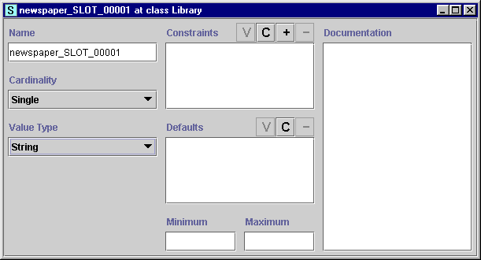

Creating a New Slot
Creating a New Slot

There are two ways to create a slot:
- By clicking the Create
 Slot button in
the Slot pane of the Slots tab.
This creates a slot, but does not assign it to any class. The slot can later
be added to one or more classes.
Slot button in
the Slot pane of the Slots tab.
This creates a slot, but does not assign it to any class. The slot can later
be added to one or more classes.
- By selecting a class in the Classes tab
and then clicking the Create
Template Slot
button in the Template Slots pane. This
creates a slot and attaches it to the selected class.
In either case, clicking the Create
button will create a new slot and display the Slot Form,
which you can use to define the properties of the slot:

Once a slot has been created, you can define and edit its
properties as described in Editing Slot
Properties.
Next: Viewing a Slot
Slots Table of
Contents